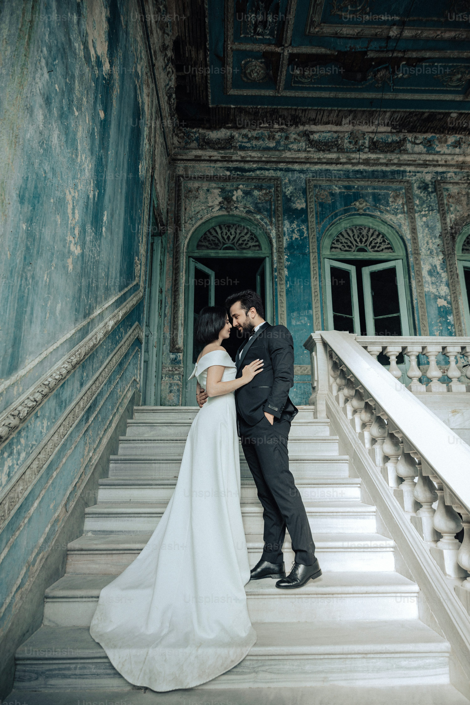
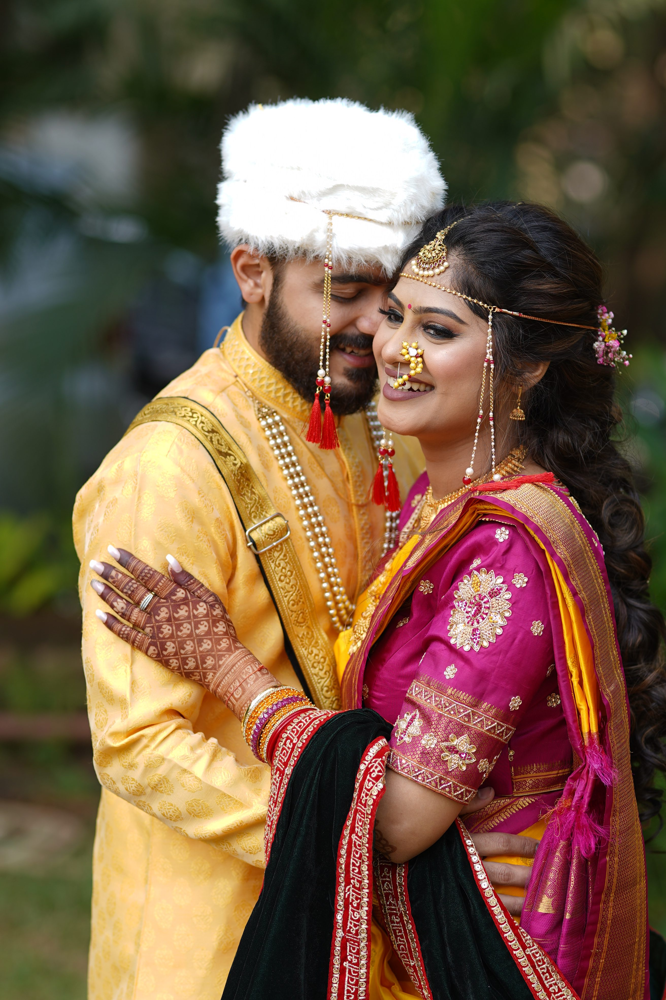

~ PORTFOLIO ~



at capture, we specialize in freezing those fleting moments in time that hold immense significant for you, with our passion dor photography and keen eye for detail,we transform ordinary moments into extraordinary memories.
whether it's a milestone event, a candid portrait,or the breathtaking beauty of nature,we strive to encapsulate the essence of every moment esuring that your cherished memories last a lifetime. trust us to capture the magic of your life's journey one frame at a time
at capturer, we offer a range of prefessional photography services tailored to meet your unique needs with a commitment to excecute abd creativity, we strive to exceed your expectation,delivering capturing visuals that tell your story with authenticity and passion.
Our portrait session are designed to showcase your personality and style in sutnning imagery.
Embrace the beuy and miracle of new life with our Maternity and newborn photography sessions.
Cherish the bond of family with our custom-designed playful candid moments and portrait sessions.


This blog post delves into the importance of storyfelling in photography and how capturer approches capturing emotion a narrative in their wok. Reader willl discover the technique strategies used be professional photographers to evoke emotional convey meaning, and create compelling visual narrrative than resonate with viwers on a deep level.